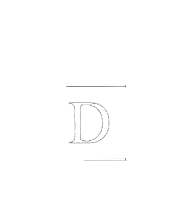
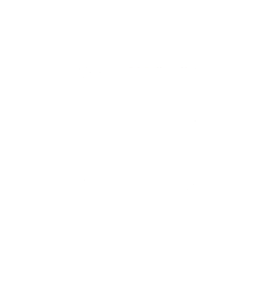
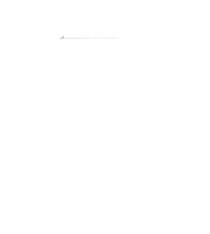
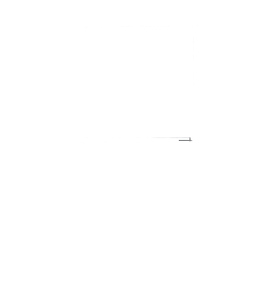
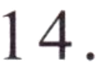

第二部分Part IIЧасть II
第14—16题： 匹配句子。Questions 14–16: Match the sentences.Вопросы 14–16: Соедините предложения.
Wǒ nǚ'ér.A 我女儿。
Shí gè.B 十个。
Píngguǒ.C 苹果。
Hǎo de. xièxie!D 好的， 谢谢！
Nǐ hē shuǐ ma?例如： 你喝水吗？
Would you like some water?Хочешь попить воды?DД
你会写几个汉字？
15.
谁上中学了？
你爱吃什么？
第三部分Part IIIЧасть III
第17—18题： 选词填空。Questions 17–18: Choose the correct word to fill in each blank.Вопросы 17–18: Выберите правильное слово, чтобы заполнить пропуск.
diànshìA 电视
BěijīngB 北京
míngziC 名字
Nǐ jiào shénme ( C )?例如： 你叫什么( C )?
What is your name?Как тебя зовут?17.
118今年我们都想去( )。